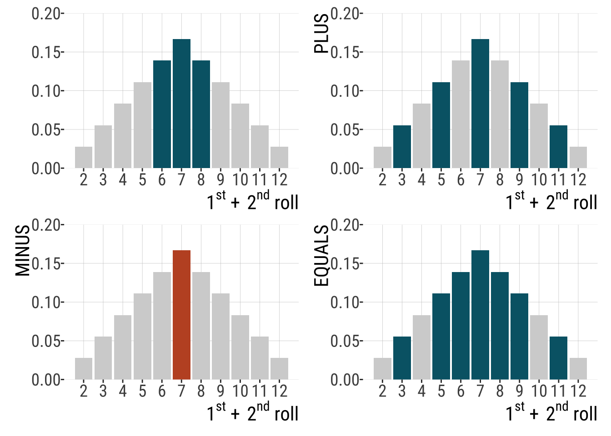

3.3.Probability
Probability Rules & Bayes’ Theorem
Keywords
Probability Rules & Bayes’ Theorem
Announcements
Please answer this poll before 10/20: https://piazza.com/class/mekmad7xwqw14d/post/13
Exam content will be up to 10/20 (more on Piazza, stay tuned)
PS2 posted yesterday (due 10/22)
Coding Assignment 1 will be posted by Friday
Outline
- Probability rules
the addition principle- addition principle: one more example
- the general multiplication principle
- using probability trees to solve probability problems
- dependent events and conditional probabilities
- the Law of Total Probability
- Principles
- Bayes theorem
Recap: Addition Principle
The probability of OR involves addition: \(P[A \text{ OR } B] = P[A] + P[B]− P[A \& B]\)
If two events are mutually exclusive: P[A & B] = 0
Therefore for mutually exclusive events: \(P[A OR B] = P[A] + P[B]\)
Example 3
Probability that the sum of two dice is odd or between 6 and 8.
. . .
- Subtract P[A & B] to avoid double counting nonexclusive events: \(P[A \text{ or } B] = P[A] + P[B] - P[A \text{ and } B]\)
. . .
The General Multiplication principle (“this AND that”)
The General Multiplication Principle
\[P[A \text{ & } B] = P[A] \times P[B|A]\]
-
The probability of “\(A \text{ & }B\)” equals:
the probability of one event times the probability of the other, conditioned on the first.
Read \(A\|B\) as “\(A \text{ given }B\)”
. . .
Independence:
Two events are independent if the occurrence of one gives no information about whether the second will occur.
\(A\) and \(B\) are independent if \(P[B | A] = P[B]\)
Note: (in)dependence does not imply any mechanistic or causative relationship.
A special case of the multiplication principle
Probabilities for independent variables
General multiplication principle: \(P[A \text{ & } B] = P[A] × P[B | A]\)
If \(A\) & \(B\) are independent: \(P[B| A] = P[B]\)
So \(P[A\text{ & }B]=P[A]\times P[B]\)
I.e., if \(A\) & \(B\) are independent, the probability of “\(A \text{ AND }B\)” is the product of their probabilities.
Example: Oguchi Disease
Oguchi disease, also called congenital stationary night blindness, Oguchi type 1 or Oguchi disease 1, is an autosomal recessive form of congenital stationary night blindness associated with (…) abnormally slow dark adaptation (From: Wikipedia)
Autosomal: not sex chromosome;
Recessive: phenotype only expressed if two copies are present (in diploids).
Example: Oguchi Disease
Scenario 1: If both of parents have an affected chromosome but no disease, what’s the probability that their child will have Oguchi disease?
[work in pairs for a few mins]
Oguchi Disease (answer)
Thinking:
A child has a ½ chance of inheriting mom’s affected chromosome AND a ½ chance of inheriting dad’s affected chromosome.
Answer
The probability that a given child of heterozygotes has the disease ½ x ½ = ¼.
Scenario 2: Child of Two Oguchi Carriers
If both of parents have an affected chromosome but no disease, what’s the probability that both of their children will have Oguchi disease?
[Work in pairs for a few minutes]
Scenario 2: Answer

\(P[\text{Both kids have Oguchi}]=\)
\(P[\text{Child 1 has it}]\times P[\text{Child 2 has it}]\times\)
\(=1/4\times 1/4=1/16\)
Using probability trees
Why?
Probability theory can be hard.
Being explicit about what you’re doing makes this easier.
Probability trees offer a simple way to follow accounting.
How to make probability trees
Write down all possible outcomes for event one, two… etc. and connect them.
Write down the probability of each outcome, conditional on their path.
-
Multiply each value down a path to find the probability of that path.
Repeat 1-3 for all paths.
Find probability: sum paths that lead to the same destination - i.e. the same outcome.
Scenario 3: Children of Oguchi Carriers
If both of parents have an affected chromosome but no disease, what’s the probability that none, one or both (three separate questions here) of their children will have Oguchi disease?
Let’s use probability trees!
Step 1: Write down all possible outcomes

Step 1: Write down all possible outcomes

Step 2. Write down the probability of each outcome, conditional on their path

Step 3. Multiply each value down a path to find the probability of that path

Step 3. Multiply each value down a path to find the probability of that path

Step 4. Sum paths that lead to the same destination
\(P[2\text{Affected }] = 1/16\); \(P[1\text{ Affected }] = 6/16\) ; \(P[0 \text{ Affected }= 9/16]\)

Dependent events & Conditional Probabilities
Dependent Events
Events are dependent when the probability of one event depends on the outcome of another.
E.g. The Probability of \(A\) depends on the value of \(B\).
If \(A\) depends on \(B\):
\[P[A\text{ & }B]\neq P[A]\times P[B]\]
Example: Surviving the Titanic
Of the 2092 Adults on the Titanic
- 319 [\(\approx 0.152\)] sat in 1st class.
- 654 [\(\approx 0.312\)] survived.
Hypothesis: If survival and sitting in 1st class are independent:
\[P[\text{ 1st class & survived }] = P[\text{ 1st class }] x P[\text{ survived }]\]
-
Expected number of 1st class adults to survive:
\(0.152\times0.312=0.047424 \times2092 = 99.7256\approx100\) 1st class adults would survive.
-
Expected number of non-1st class adults to survive: we expect
\(0.848\times0.312=0.2649 =0.26\times2092 \approx 554\) other adults would survive
Surviving the titanic
Actually …
-
More 1st class passengers survived than expected.
- 197 of the 319 people in 1st class survived. (~ 62%)
- This severely exceeds the 100 expected survivors.
-
Fewer other passengers survived than expected.
- 457 of the 1773 other passengers survived. (~ 26%)
- This is way less than the 554 expected survivors.
We will learn soon how to test how likely (or unlikely) such an event is under the assumption of independence.
Conditional Probability
The conditional probability of an event is the probability of that event occurring given that a condition is met.
\(P[X|Y]\) (read “\(|\)” as “given”.)
\(P[X|Y]\) means the probability of \(X\) if \(Y\) is true.
Example: Surviving the Titanic Conditional on Class
Hypothesis: If survival and sitting in 1st class are not independent
\(P[\text{ Survive| Adult in 1st class}] = 197/319 = 0.62\)
\(P[\text{ Survive| Adult NOT in 1st class}] = 457/1773 = 0.26\)
The Law of Total Probability
Convert conditional probabilities (\(P[X|Y_{i}\)]) to total probabilities (\(P[X]\)) by weighting conditional probabilities by the probability of the condition (\(Y_{i}\)) and summing over all conditions.
\[P[X]=\sum{(P[X|Y_{i}]\times P[Y_{i}])}\]
Example: The Total Probability of Surviving the Titanic
\(P[X]=\sum{(P[X|Y_{i}]\times P[Y_{i}])}\)
Of the 2092 Adults on the Titanic
319 [\(\approx0.152\)] sat in 1st class.
654 [\(\approx0.312\)] survived.
197 of the 319 people in 1st class survived. (\(\approx0.62\))
457 of the 1773 other passengers survived. (\(\approx0.26\))
Example: The Total Probability of Surviving the Titanic
\[P[X]=\sum{(P[X|Y_{i}]\times P[Y_{i}])}\]
\(P[\text{Survive}]=\sum{(P[\text{Survive}|\text{Class}_{i}]\times P[\text{Class}_{i}])}\)
\(P[\text{Survive}]=\sum{(P[\text{Survive}|\text{1st class}]\times P[\text{1st class}])}\)
\(+\)
\(P[\text{Survive}|\text{NOT 1st class}]\times P[\text{NOT 1st class}])\)
\(P[\text{Survive}]=(0.62\times 0.152)+(0.26\times 0.848)\)
\(P[\text{Survive}]=0.314\)
Titanic survival conditional on class with probability trees

We recover \(P[\text{survive}]=0.094+0.220=0.314\)
Bayes’ Theorem
Bayes’ Theorem: Definition
The probability of “\(A\) given \(B\)” equals the probability of \(B\) given \(A\) times the probability of \(A\) divided by the probability of \(B\).
\[P[A|B]=\frac{P[B|A] \times P[A]}{P[B]}\]
Bayes’ Theorem: Derivation

Bayes’ Theorem: Titanic Example
Find the probability that an adult survivor was in 1st class.
319 of the 2092 adults on the Titanic where in 1st class.
197 of the 319 adults in 1st class survived.
457 of the other adults survived.
\(P[\text{1st class}|\text{Survive}]=?\)
[work in pairs]
Solution
\(P[\text{1st class}|\text{Survive}]=\frac{P[\text{Survive}|\text{1st class}]\times P[\text{1st class}]}{P[\text{Survive}]}\)
\(P[\text{1st class}|\text{Survive}]=\frac{197/319\times(319/2092)}{[(197+457)/2092]}=0.30\)
That’s all for today